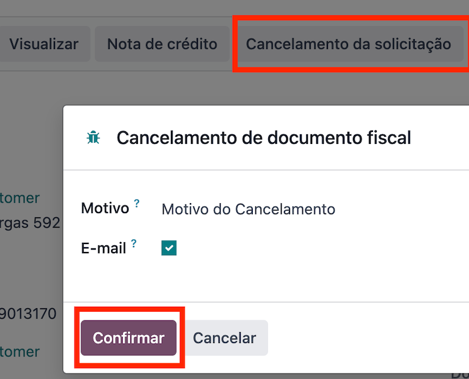
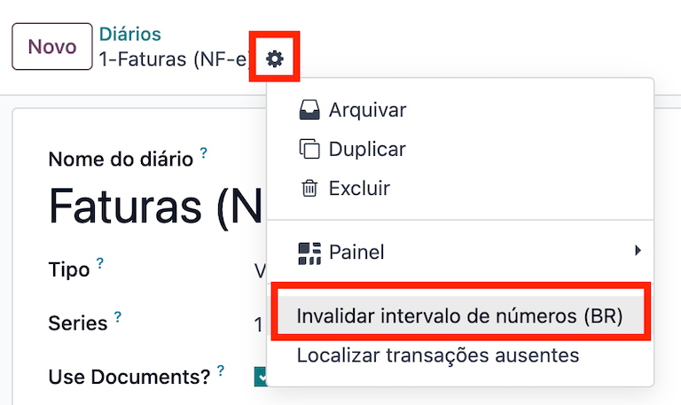

ประเทศบราซิล¶
แนะนำ¶
ด้วยการประยุกต์ใช้สำหรับประเทศบราซิล ภาษีการขายสามารถคำนวณได้โดยอัตโนมัติ และสามารถส่งใบแจ้งหนี้อิเล็กทรอนิกส์สำหรับสินค้า (NF-e) และบริการ (NFS-e) ได้โดยใช้ AvaTax (Avalara) ผ่านการเรียก API นอกจากนี้ยังสามารถกำหนดค่าภาษีสำหรับบริการได้
สำหรับการคำนวณภาษีสินค้าและบริการและกระบวนการออกใบแจ้งหนี้อิเล็กทรอนิกส์ คุณต้องกำหนดค่า รายชื่อผู้ติดต่อ, บริษัท, ผลิตภัณฑ์ และ สร้างบัญชีใน AvaTax ซึ่งจำเป็นต้องกำหนดค่าในการตั้งค่าทั่วไป
สำหรับภาษีบริการ คุณสามารถสร้างและกำหนดค่าได้จาก Odoo โดยตรงโดยไม่ต้องคำนวณด้วย AvaTax
การประยุกต์ใช้ยังรวมถึงภาษีและเทมเพลตผังบัญชีที่สามารถแก้ไขได้หากจำเป็น
การกำหนดค่า¶
การติดตั้งโมดูล¶
ติดตั้ง โมดูลต่อไปนี้เพื่อรับฟีเจอร์ทั้งหมดของการประยุกต์ใช้สำหรับประเทศบราซิล:
ชื่อ |
ชื่อทางเทคนิค |
คำอธิบาย |
|---|---|---|
ประเทศบราซิล - ระบบบัญชี |
|
ค่าเริ่มต้น แพ็คเกจการประยุกต์ใช้ทางการเงิน ซึ่งแสดงถึงการมีผังบัญชีและภาษีทั่วไปของประเทศบราซิล พร้อมด้วยประเภทเอกสารและชนิดรหัสประจำตัว |
ประเทศบราซิล - รายงานด้านบัญชี |
|
รายงานทางบัญชีสำหรับประเทศบราซิล |
AvaTax ประเทศบราซิล & AvaTax ประเทศบราซิลสำหรับการบริการ |
|
การคำนวณภาษีสินค้าและบริการผ่าน Avalara |
EDI การบัญชีประเทศบราซิล & EDI การบัญชีประเทศบราซิลสำหรับบริการ |
|
จัดทำใบแจ้งหนี้อิเล็กทรอนิกส์สำหรับสินค้าและบริการสำหรับบราซิลผ่าน AvaTax |
รหัส QR โค้ด Pix ของประเทศบราซิล |
|
ใช้รหัส QR โค้ด Pix สำหรับประเทศบราซิล |
กำหนดค่าบริษัทของคุณ¶
หากต้องการกำหนดค่าข้อมูลบริษัทของคุณ ให้ไปที่ :menuselection: แอป "รายชื่อผู้ติดต่อ" และค้นหาชื่อที่กำหนดให้กับบริษัทของคุณ
เลือกตัวเลือก บริษัท ที่ด้านบนของหน้า จากนั้น กำหนดค่าฟิลด์ต่อไปนี้:
ชื่อ
ที่อยู่: add เมือง, รัฐ, รหัสไปรษณีย์, ประเทศ
ในช่อง ถนน ให้ป้อนชื่อถนน หมายเลข และข้อมูลที่อยู่เพิ่มเติม
ในฟิลด์ ถนน 2 ให้ป้อนบริเวณใกล้เคียง
หมายเลขประจำตัว: CNPJ หรือ CPF
หมายเลขประจำตัวผู้เสียภาษี: เชื่อมโยงกับประเภทการระบุตัวตน
IE: การจดทะเบียนของรัฐ
IM: การจดทะเบียนเทศบาล
รหัส SUFRAMA: การกำกับดูแลเขตการค้าเสรีประเทศมาเนาส์ - เพิ่มถ้าหากมี
โทรศัพท์
อีเมล

กำหนดค่า ข้อมูลทางการเงิน ภายในแท็บ การขายและการซื้อ:
เพิ่ม สถานะทางบัญชี สำหรับ AvaTax บราซิล
ระบบภาษี: ระบบภาษีของรัฐและจังหวัด
ประเภทผู้เสียภาษี ICMS: ระบุ ค่าเบี้ยเลี้ยง ICMS, สถานะได้รับการยกเว้น หรือ ผู้ไม่เสียภาษี
ภาคกิจกรรมหลัก
กำหนดค่าเพิ่มเติมต่อไปนี้ ข้อมูลทางการคลัง หากคุณกำลังจะออกการบริการ NFS-e:
เพิ่ม สถานะทางบัญชี สำหรับ AvaTax บราซิล
รายละเอียด COFINS: ต้องเสียภาษี ไม่ต้องเสียภาษี ต้องเสียภาษีด้วยอัตรา 0% ได้รับการยกเว้น ถูกระงับ
รายละเอียด PIS ต้องเสียภาษี ไม่ต้องเสียภาษี ต้องเสียภาษีด้วยอัตรา 0% ได้รับการยกเว้น ถูกระงับ
CSLL ต้องเสียภาษี หากบริษัทอยู่ภายใต้ CSLL หรือไม่
สุดท้าย อัปโหลดโลโก้บริษัทและบันทึกผู้ติดต่อ
Note
หากคุณเป็นระบบการควบคุมแบบง่าย คุณต้องกำหนดค่าอัตรา ICMS ภายใต้
กำหนดค่าการรวม AvaTax¶
Avalara AvaTax คือผู้ให้บริการการคำนวณภาษีและการออกใบแจ้งหนี้อิเล็กทรอนิกส์ที่สามารถรวมเข้ากับ Odoo เพื่อคำนวณภาษีโดยอัตโนมัติโดยคำนึงถึงบริษัท ข้อมูลติดต่อ (ลูกค้า) ผลิตภัณฑ์ และข้อมูลธุรกรรม เพื่อดึงข้อมูลภาษีที่ถูกต้องที่จะใช้และประมวลผล e- ออกใบแจ้งหนี้กับทางราชการในภายหลัง
การใช้การผสานรวมนี้จำเป็นต้องมี In-App-Purchases (IAPs) เพื่อคำนวณภาษีและส่งใบแจ้งหนี้อิเล็กทรอนิกส์ เมื่อใดก็ตามที่คุณคำนวณภาษี ส่งเอกสารอิเล็กทรอนิกส์ (NF-e, NFS-e ฯลฯ) หรือดำเนินการทางอิเล็กทรอนิกส์ใดๆ (การยกเลิก NF-e จดหมายแก้ไข ช่วงหมายเลขใบแจ้งหนี้ไม่ถูกต้อง) การเรียก API จะดำเนินการโดยใช้เครดิตจากของคุณ ยอดเครดิต IAP
Note
Odoo เป็นคู่ค้าที่ได้รับการรับรองของ Avalara สำหรับประเทศบราซิล
คุณสามารถ ซื้อเครดิต IAP ได้ที่ odoo.com
On creation, new databases receive 500 free credits.
การกำหนดค่าข้อมูลรับรอง¶
หากต้องการเปิดใช้งาน AvaTax ใน Odoo คุณต้องสร้างบัญชี โดยไปที่ และในส่วน AvaTax ประเทศบราซิล ให้เพิ่มที่อยู่อีเมลของผู้ดูแลระบบที่จะใช้สำหรับพอร์ทัล AvaTax ใน อีเมลพอร์ทัล AvaTax จากนั้นคลิกที่ สร้างบัญชี
Warning
เมื่อ ทดสอบ หรือ สร้างการผลิต อีเมลพอร์ทัล AvaTax การผสานรวมในฐานข้อมูลแซนด์บ็อกซ์หรือการใช้งานจริง ให้ใช้ที่อยู่อีเมลจริง เนื่องจากจำเป็นในการเข้าสู่ระบบพอร์ทัล Avalara และตั้งค่า ใบรับรองไม่ว่าคุณจะต้องการทดสอบหรือใช้งานจริงก็ตาม
มีพอร์ทัล Avalara ที่แตกต่างกันสองแห่ง อันหนึ่งสำหรับการทดสอบและอีกอันสำหรับการใช้งานจริง:
แซนด์บ็อกซ์: https://portal.sandbox.avalarabrasil.com.br/
การใช้งานจริง: https://portal.avalarabrasil.com.br/
เมื่อคุณสร้างบัญชีจาก Odoo อย่าลืมเลือกสภาพแวดล้อมที่ถูกต้อง นอกจากนี้อีเมลที่ใช้เปิดบัญชีไม่สามารถใช้เปิดบัญชีอื่นได้ บันทึก API ID และ คีย์ API ของคุณเมื่อคุณสร้างบัญชีจาก Odoo
หลังจากที่คุณสร้างบัญชีจาก Odoo คุณจะต้องไปที่พอร์ทัล Avalara เพื่อตั้งรหัสผ่าน:
เข้าถึง พอร์ทัล Avalara.
คลิกที่ Meu primeiro acesso
เพิ่มที่อยู่อีเมลที่คุณใช้ใน Odoo เพื่อสร้างบัญชี Avalara/AvaTax จากนั้นคลิก Solicitar Senha
คุณจะได้รับอีเมลพร้อมโทเค็นและลิงก์สำหรับสร้างรหัสผ่าน คลิกที่ลิงค์นี้และคัดลอกและวางโทเค็นเพื่อจัดสรรรหัสผ่านที่คุณต้องการ
Tip
คุณสามารถเริ่มใช้ AvaTax ใน Odoo เพื่อคำนวณภาษีได้ เท่านั้น โดยไม่ต้องสร้างรหัสผ่านและเข้าถึงพอร์ทัล Avalara ในฐานข้อมูล Odoo อย่างไรก็ตาม ในการใช้บริการใบแจ้งหนี้อิเล็กทรอนิกส์ คุณ ต้อง เข้าถึงพอร์ทัล AvaTax และอัปโหลดใบรับรองของคุณที่นั่น

Note
คุณสามารถถ่ายโอน API ข้อมูลรับรอง ใช้สิ่งนี้เฉพาะเมื่อคุณได้สร้างบัญชีในอินสแตนซ์ Odoo อื่นแล้วและต้องการใช้ซ้ำ
การอัปโหลดใบรับรอง A1¶
หากต้องการออกใบแจ้งหนี้อิเล็กทรอนิกส์ จะต้องอัปโหลดใบรับรองไปยัง พอร์ทัล AvaTax
ใบรับรองจะซิงโครไนซ์กับ Odoo ตราบใดที่หมายเลขตัวระบุภายนอกในพอร์ทัล AvaTax ตรงกับหมายเลข CNPJ โดยไม่มีอักขระพิเศษ และหมายเลขประจำตัว (CNPJ) ใน Odoo ตรงกับ CNPJ ใน AvaTax
Important
หากต้องการออกบริการ NFS-e บางเมืองจำเป็นต้องให้คุณเชื่อมโยงใบรับรองภายในระบบ City Portal ก่อนที่จะออกการบริการ NFS-e จาก Odoo
หากคุณได้รับข้อความแสดงข้อผิดพลาดจากเมืองที่ระบุว่า ใบรับรองของคุณไม่ได้เชื่อมโยงกับผู้ใช้ นั่นหมายความว่ากระบวนการนี้จะต้องดำเนินการในพอร์ทัลของเมือง
กำหนดค่าข้อมูลหลัก¶
ผังบัญชี¶
ผังบัญชี ได้รับการติดตั้งตามค่าเริ่มต้น โดยเป็นส่วนหนึ่งของชุดข้อมูลที่รวมอยู่ในโมดูลการแปล บัญชีจะถูกแม็ปโดยอัตโนมัติในภาษีที่เกี่ยวข้อง และฟิลด์บัญชีเจ้าหนี้และบัญชีลูกหนี้เริ่มต้น
Note
ผังบัญชีสำหรับบราซิลจะขึ้นอยู่กับ SPED CoA ซึ่งเป็นข้อมูลพื้นฐานของบัญชีที่จำเป็นในประเทศบราซิล
คุณสามารถเพิ่มหรือลบบัญชีได้ตามความต้องการของบริษัท
สมุดรายวัน¶
ในบราซิล หมายเลข ชุด จะเชื่อมโยงกับช่วงหมายเลขลำดับสำหรับใบแจ้งหนี้อิเล็กทรอนิกส์ หมายเลขชุดสามารถกำหนดค่าได้ใน Odoo ในสมุดรายวันการขายจากฟิลด์ ชุด หากจำเป็นต้องใช้มากกว่าหนึ่งชุด จะต้องสร้างสมุดรายวันการขายใหม่และกำหนดหมายเลขชุดใหม่ให้กับแต่ละชุดที่ต้องการ
จำเป็นต้องเลือกฟิลด์ ใช้เอกสาร เมื่อออกใบแจ้งหนี้อิเล็กทรอนิกส์และไม่ใช่อิเล็กทรอนิกส์ ฟิลด์ ประเภท จะเลือกประเภทเอกสารที่ใช้เมื่อสร้างใบแจ้งหนี้ ฟิลด์ ประเภท จะแสดงก็ต่อเมื่อมีการเลือกฟิลด์ ใช้เอกสาร ในสมุดรายวัน
Note
เมื่อสร้างสมุดรายวัน ตรวจสอบให้แน่ใจว่าฟิลด์ ลำดับใบลดหนี้ที่กำหนด ไม่ได้ถูกเลือก เช่นเดียวกับในประเทศบราซิล ลำดับระหว่างใบแจ้งหนี้ ใบลดหนี้ และใบเพิ่มหนี้จะถูกใช้ร่วมกันตามหมายเลขชุด ซึ่งหมายถึงต่อสมุดรายวัน
ภาษี¶
ภาษีจะถูกสร้างขึ้นโดยอัตโนมัติเมื่อติดตั้งการประยุกต์ใช้ในประเทศบราซิล ภาษีได้รับการกำหนดค่าไว้แล้ว และ Avalara บางส่วนจะใช้เมื่อคำนวณภาษีในใบสั่งขายหรือใบแจ้งหนี้
สามารถแก้ไขภาษีได้หรือเพิ่มภาษีเพิ่มเติมได้ ตัวอย่างเช่น ภาษีบางส่วนที่ใช้สำหรับบริการจำเป็นต้องเพิ่มและกำหนดค่าด้วยตนเอง เนื่องจากอัตราอาจแตกต่างกันไปขึ้นอยู่กับเมืองที่คุณเสนอบริการ
Important
หากคุณตัดสินใจที่จะชำระภาษีบริการด้วยตนเอง คุณจะไม่สามารถออกบริการ NFS-e ได้ หากต้องการส่ง NFS-e ทางอิเล็กทรอนิกส์ คุณต้องคำนวณภาษีโดยใช้ Avalara
Warning
ห้ามลบภาษี เนื่องจากใช้สำหรับการคำนวณภาษี AvaTax หากถูกลบ Odoo จะสร้างใหม่อีกครั้งเมื่อใช้ใน SO หรือใบแจ้งหนี้และการคำนวณภาษีด้วย AvaTax แต่บัญชีที่ใช้ในการลงทะเบียนภาษีจะต้องได้รับการกำหนดค่าใหม่ในแท็บ คำจำกัดความ ของภาษี ภายใต้ การกระจายใบแจ้งหนี้ และ การแบ่งส่วนการคืนเงิน
See also
สินค้า¶
หากต้องการใช้การผสานรวม AvaTax กับใบสั่งขายและใบแจ้งหนี้ ขั้นแรกให้ระบุข้อมูลต่อไปนี้เกี่ยวกับผลิตภัณฑ์โดยขึ้นอยู่กับการใช้งานที่ต้องการ:
ใบแจ้งหนี้ค่าสินค้าอิเล็กทรอนิกส์ (NF-e)¶
รหัส CEST: รหัสสำหรับผลิตภัณฑ์ที่ต้องเสียภาษี ICMS
รหัส Mercosul NCM: รหัสผลิตภัณฑ์ระบบการตั้งชื่อทั่วไปของ Mercosur
แหล่งที่มาของสินค้า: ระบุแหล่งที่มาของผลิตภัณฑ์ ซึ่งอาจมาจากต่างประเทศหรือในประเทศก็ได้ รวมถึงตัวเลือกอื่นๆ ที่เป็นไปได้ ขึ้นอยู่กับกรณีการใช้งานเฉพาะ
ประเภทผลิตภัณฑ์ทางการเงิน SPED ประเภทผลิตภัณฑ์ทางการเงินตามตารางรายการ SPED
วัตถุประสงค์การใช้งาน ระบุวัตถุประสงค์การใช้งานสำหรับผลิตภัณฑ์นี้

Note
Odoo จะสร้างผลิตภัณฑ์สามรายการโดยอัตโนมัติเพื่อใช้เป็นค่าขนส่งที่เกี่ยวข้องกับการขาย สิ่งเหล่านี้มีชื่อว่า "ค่าขนส่ง" "ประกันภัย" และ "ต้นทุนอื่นๆ" มีการกำหนดค่าไว้แล้ว หากต้องการสร้างเพิ่มเติม ให้ทำซ้ำและใช้การกำหนดค่าเดียวกัน (จำเป็นต้องมีการกำหนดค่า: ประเภทผลิตภัณฑ์ บริการ, ประเภทต้นทุนการขนส่ง ประกันภัย, ค่าขนส่ง หรือ ค่าใช้จ่ายอื่นๆ)
ใบแจ้งหนี้อิเล็กทรอนิกส์สำหรับบริการ (NFS-e)¶
รหัส Mercosul NCM: รหัสผลิตภัณฑ์ระบบการตั้งชื่อทั่วไปของ Mercosur
วัตถุประสงค์การใช้งาน ระบุวัตถุประสงค์การใช้งานสำหรับผลิตภัณฑ์นี้
แหล่งที่มาของรหัสบริการ: รหัสบริการเมืองที่ผู้ให้บริการลงทะเบียนไว้
รหัสบริการ: รหัสบริการเมืองที่จะให้บริการ หากไม่มีการเพิ่มรหัส ระบบจะใช้รหัสเมืองต้นทาง
การกำหนดคนงาน: กำหนดว่าบริการของคุณได้รวมคนงานด้วยหรือไม่
การติดต่อ¶
ก่อนที่จะใช้การรวม ให้ระบุข้อมูลต่อไปนี้ในผู้ติดต่อ:
ข้อมูลทั่วไปเกี่ยวกับการติดต่อ:
เลือกตัวเลือก บริษัท สำหรับผู้ติดต่อที่มีหมายเลขประจำตัวผู้เสียภาษี (CNPJ) หรือทำเครื่องหมาย รายบุคคล สำหรับผู้ติดต่อที่มี CPF
ชื่อ
ที่อยู่: add เมือง, รัฐ, รหัสไปรษณีย์, ประเทศ
ในช่อง ถนน ให้ป้อนถนน หมายเลข และข้อมูลที่อยู่เพิ่มเติม
ในฟิลด์ ถนน 2 ให้ป้อนบริเวณใกล้เคียง
หมายเลขประจำตัว: CNPJ หรือ CPF
หมายเลขประจำตัวผู้เสียภาษี: เชื่อมโยงกับประเภทการระบุตัวตน
IE: หมายเลขประจำตัวผู้เสียภาษีของรัฐ
IM: หมายเลขประจำตัวผู้เสียภาษีเทศบาล
รหัส SUFRAMA: หมายเลขทะเบียน SUFRAMA
โทรศัพท์
อีเมล
Note
ช่อง CPF, IE, IM และ รหัส SUFRAMA จะถูกซ่อนไว้จนกว่า ประเทศ จะถูกตั้งค่าเป็น
ประเทศบราซิลข้อมูลทางการเงินเกี่ยวกับผู้ติดต่อภายใต้แท็บ การขาย & การจัดซื้อ:
สถานะทางการเงิน: เพิ่มสถานะทางการเงินของ AvaTax เพื่อคำนวณภาษีสำหรับใบสั่งขายและใบแจ้งหนี้โดยอัตโนมัติ
ระบบภาษี: ระบอบภาษีของรัฐและจังหวัด
ประเภทผู้เสียภาษี ICMS: ประเภทผู้เสียภาษีจะกำหนดว่าผู้ติดต่ออยู่ภายใน ค่าเบี้ยเลี้ยง ICMS, สถานะได้รับการยกเว้น หรือ ผู้ไม่เสียภาษี
ส่วนกิจกรรมหลัก: รายการส่วนกิจกรรมหลักของผู้ติดต่อ
กำหนดค่าเพิ่มเติมต่อไปนี้ ข้อมูลทางการคลัง หากคุณกำลังจะออกการบริการ NFS-e:
เพิ่ม สถานะทางบัญชี สำหรับ AvaTax บราซิล
รายละเอียด COFINS: ต้องเสียภาษี ไม่ต้องเสียภาษี ต้องเสียภาษีด้วยอัตรา 0% ได้รับการยกเว้น ถูกระงับ
รายละเอียด PIS: ต้องเสียภาษี ไม่ต้องเสียภาษี ต้องเสียภาษีด้วยอัตรา 0% ได้รับการยกเว้น ถูกระงับ
CSLL ต้องเสียภาษี: หากบริษัทอยู่ภายใต้ CSLL หรือไม่
สถานะทางการเงิน¶
ในการคำนวณภาษีและส่งใบแจ้งหนี้อิเล็กทรอนิกส์สำหรับคำสั่งซื้อขายและใบแจ้งหนี้ ทั้งตัวเลือก ตรวจจับโดยอัตโนมัติ และ ใช้ AvaTax API จำเป็นต้องเปิดใช้งานใน สถานะทางการเงิน
สถานะทางบัญชี สามารถกำหนดค่าได้ใน รายชื่อผู้ติดต่อ หรือเลือกเมื่อสร้างใบสั่งขายหรือใบแจ้งหนี้

ขั้นตอนการทำงาน¶
ส่วนนี้จะแสดงภาพรวมของการดำเนินการที่ทริกเกอร์ การเรียก API สำหรับการคำนวณภาษี พร้อมด้วยคำแนะนำเกี่ยวกับวิธีการส่งใบแจ้งหนี้อิเล็กทรอนิกส์สำหรับสินค้า (NF-e) และบริการ (NFS-e) เพื่อการตรวจสอบความถูกต้องของรัฐบาล
Warning
โปรดทราบว่าแต่ละ API การโทรมีค่าใช้จ่าย คำนึงถึงการกระทำที่กระตุ้นให้เกิดการโทรเหล่านี้เพื่อจัดการต้นทุนอย่างมีประสิทธิภาพ
การคำนวณภาษี¶
การคำนวณภาษีในใบเสนอราคาและใบสั่งขาย¶
ทริกเกอร์ API โทรคำนวณภาษีในใบเสนอราคาหรือใบสั่งขายโดยอัตโนมัติด้วย AvaTax ด้วยวิธีใดวิธีหนึ่งต่อไปนี้:
- ยืนยันใบเสนอราคา
ยืนยันใบเสนอราคาในใบสั่งขาย
- เริ่มต้นด้วยตนเอง
คลิกที่ คำนวณภาษีโดยใช้ AvaTax
- ตัวอย่าง
คลิกที่ปุ่ม ดูตัวอย่าง
- ส่งใบเสนอราคา/สั่งซื้อทางอีเมล์
ส่งใบเสนอราคาหรือคำสั่งขายให้กับลูกค้าผ่านทางอีเมล
- การเข้าถึงใบเสนอราคาออนไลน์
เมื่อลูกค้าเข้าถึงใบเสนอราคาออนไลน์ (ผ่านมุมมองพอร์ทัล) API การโทรถูกเริ่มต้น
การคำนวณภาษีในใบแจ้งหนี้¶
ทริกเกอร์การเรียก API เพื่อคำนวณภาษีในใบแจ้งหนี้ของลูกค้าโดยอัตโนมัติด้วย AvaTax ด้วยวิธีใดวิธีหนึ่งต่อไปนี้:
- เริ่มต้นด้วยตนเอง
คลิกที่ คำนวณภาษีโดยใช้ AvaTax
- ตัวอย่าง
คลิกที่ปุ่ม ดูตัวอย่าง
- การเข้าถึงใบแจ้งหนี้ออนไลน์
เมื่อลูกค้าเข้าถึงใบแจ้งหนี้ออนไลน์ (ผ่านมุมมองพอร์ทัล) API การโทรถูกเริ่มต้น
Note
สถานะทางการเงิน ต้องตั้งค่าเป็น การแมปภาษีอัตโนมัติ (Avalara สำหรับประเทศบราซิล) สำหรับการดำเนินการเหล่านี้เพื่อคำนวณภาษีโดยอัตโนมัติ
เอกสารอิเล็กทรอนิกส์¶
ใบแจ้งหนี้ของลูกค้า¶
ในการประมวลผลใบแจ้งหนี้อิเล็กทรอนิกส์สำหรับสินค้า (NF-e) หรือบริการ (NFS-e) ใบแจ้งหนี้จะต้องได้รับการยืนยัน และ Avalara จะต้องคำนวณภาษี เมื่อขั้นตอนดังกล่าวเสร็จสิ้น คลิกที่ปุ่ม ส่งและพิมพ์ ที่มุมซ้ายบน ในป๊อปอัปที่ปรากฏขึ้น ให้คลิก ประมวลผลใบแจ้งหนี้อิเล็กทรอนิกส์ และตัวเลือกอื่นๆ - ดาวน์โหลด หรือ อีเมล สุดท้าย คลิกที่ ส่งและพิมพ์ เพื่อประมวลผลใบแจ้งหนี้กับรัฐบาล
ก่อนที่จะส่งใบแจ้งหนี้อิเล็กทรอนิกส์สำหรับสินค้า (NF-e) หรือบริการ (NFS-e) จำเป็นต้องกรอกฟิลด์บางฟิลด์ในใบแจ้งหนี้:
ลูกค้า พร้อมข้อมูลลูกค้าทั้งหมด
วิธีการชำระเงิน: ประเทศบราซิล: วิธีการชำระเงินตามใบแจ้งหนี้
สถานะทางการเงิน ถูกกำหนดเป็น การแมปภาษีอัตโนมัติ (Avalara สำหรับประเทศบราซิล)
ประเภทเอกสาร ตั้งค่าเป็น (55) ใบแจ้งหนี้อิเล็กทรอนิกส์ (NF-e) หรือ (SE) ใบแจ้งหนี้บริการอิเล็กทรอนิกส์ (NFS-e)
มีฟิลด์ตัวเลือกอื่นๆ บางฟิลด์ที่ขึ้นอยู่กับลักษณะของธุรกรรม ฟิลด์เหล่านี้ไม่จำเป็น ดังนั้นรัฐบาลจะไม่แสดงข้อผิดพลาดใดๆ หากฟิลด์ทางเลือกเหล่านี้ไม่ได้เติมไว้ในกรณีส่วนใหญ่:
โมเดลการขนส่งสินค้า กำหนดวิธีวางแผนการขนส่งสินค้า - ภายในประเทศ
ผู้ขนส่งสำหรับประเทศบราซิล เป็นผู้กำหนดว่าใครเป็นผู้ขนส่ง


Note
ฟิลด์ทั้งหมดที่มีอยู่ในใบแจ้งหนี้ที่ใช้ในการออกใบแจ้งหนี้อิเล็กทรอนิกส์จะมีอยู่ในใบสั่งขายด้วย หากจำเป็น เมื่อสร้างใบแจ้งหนี้ใบแรก ฟิลด์ หมายเลขเอกสาร จะแสดงขึ้น โดยจัดสรรเป็นหมายเลขแรกที่จะใช้ตามลำดับสำหรับใบแจ้งหนี้ครั้งถัดไป
ใบลดหนี้¶
หากจำเป็นต้องลงทะเบียนการคืนสินค้า คุณสามารถสร้างใบลดหนี้ใน Odoo เพื่อส่งให้รัฐบาลตรวจสอบได้
Note
ใบลดหนี้จะพร้อมใช้งานสำหรับใบแจ้งหนี้อิเล็กทรอนิกส์สำหรับสินค้า (NF-e) เท่านั้น
See also
ใบเพิ่มหนี้¶
หากจำเป็นต้องรวมข้อมูลเพิ่มเติม หรือจำเป็นต้องแก้ไขค่าที่ไม่ได้ระบุไว้อย่างถูกต้องในใบแจ้งหนี้ต้นฉบับ ก็สามารถออกใบเพิ่มหนี้ได้
Note
ใบเพิ่มหนี้จะพร้อมใช้งานสำหรับใบแจ้งหนี้อิเล็กทรอนิกส์สำหรับสินค้า (NF-e) เท่านั้น
เฉพาะผลิตภัณฑ์ที่รวมอยู่ในใบแจ้งหนี้ต้นฉบับเท่านั้นที่สามารถเป็นส่วนหนึ่งของใบเพิ่มหนี้ได้ แม้ว่าจะสามารถเปลี่ยนแปลงราคาต่อหน่วยหรือปริมาณของผลิตภัณฑ์ได้ แต่ผลิตภัณฑ์ ไม่สามารถ เพิ่มลงในใบเพิ่มหนี้ได้ วัตถุประสงค์ของเอกสารนี้คือเพื่อแจ้งจำนวนเงินที่คุณต้องการเพิ่มลงในใบแจ้งหนี้เดิมสำหรับสินค้าที่เท่ากันหรือน้อยกว่าเท่านั้น
See also
การยกเลิกใบแจ้งหนี้¶
สามารถยกเลิกใบแจ้งหนี้อิเล็กทรอนิกส์ที่ได้รับการตรวจสอบโดยรัฐบาลได้
Note
ตรวจสอบว่าใบแจ้งหนี้อิเล็กทรอนิกส์ยังอยู่ในกำหนดเวลาการยกเลิกซึ่งอาจแตกต่างกันไปตามกฎหมายของแต่ละรัฐ
ใบแจ้งหนี้อิเล็กทรอนิกส์สำหรับสินค้า (NF-e)¶
ยกเลิกใบแจ้งหนี้อิเล็กทรอนิกส์สำหรับสินค้า (NF-e) ใน Odoo โดยคลิก ขอยกเลิก และเพิ่ม เหตุผล การยกเลิกในป๊อปอัปที่ปรากฏขึ้น หากคุณต้องการส่งเหตุผลการยกเลิกนี้ให้กับลูกค้าทางอีเมล ให้เปิดใช้งานช่องทำเครื่องหมาย อีเมล
Note
นี่คือการยกเลิกทางอิเล็กทรอนิกส์ ซึ่งหมายความว่า Odoo จะส่งคำขอไปยังรัฐบาลให้ยกเลิก NF-e จากนั้นจะใช้หนึ่ง IAP เครดิตในฐานะ API จะมีการเรียกเกิดขึ้น
ใบแจ้งหนี้อิเล็กทรอนิกส์สำหรับการบริการ (NFS-e)¶
ยกเลิกใบแจ้งหนี้อิเล็กทรอนิกส์สำหรับบริการ (NFS-e) ใน Odoo โดยคลิก ขอยกเลิก ในกรณีนี้ ไม่มีกระบวนการยกเลิกทางอิเล็กทรอนิกส์ เนื่องจากไม่ใช่ทุกเมืองที่จะมีบริการนี้ ผู้ใช้จำเป็นต้องยกเลิก NFS-e นี้ด้วยตนเองบนพอร์ทัลเมือง เมื่อขั้นตอนดังกล่าวเสร็จสิ้น พวกเขาสามารถขอยกเลิกใน Odoo ซึ่งจะยกเลิกใบแจ้งหนี้
จดหมายแก้ไข¶
สามารถสร้างจดหมายแก้ไขและเชื่อมโยงกับใบแจ้งหนี้อิเล็กทรอนิกส์สำหรับสินค้า (NF-e) ที่ได้รับการตรวจสอบโดยรัฐบาล
ซึ่งสามารถทำได้ใน Odoo โดยคลิก จดหมายแก้ไข และเพิ่มการแก้ไข เหตุผล ในป๊อปอัปที่แสดงขึ้น หากต้องการส่งเหตุผลการแก้ไขนี้ให้กับลูกค้าทางอีเมล ให้เปิดใช้งานช่องทำเครื่องหมาย อีเมล
Note
จดหมายแก้ไขจะพร้อมใช้งานสำหรับใบแจ้งหนี้อิเล็กทรอนิกส์สำหรับสินค้า (NF-e) เท่านั้น
ช่วงหมายเลขใบแจ้งหนี้ไม่ถูกต้อง¶
ช่วงของลำดับที่กำหนดให้กับสมุดรายวันการขายอาจทำให้รัฐบาลเป็นโมฆะได้ ถ้าไม่ได้ใช้งานอยู่ในปัจจุบัน และ จะไม่ถูกนำมาใช้ในอนาคต โดยไปที่สมุดรายวัน แล้วคลิกไอคอน ในตัวช่วยสร้าง Invalidate Number Range (BR) ให้เพิ่ม หมายเลขเริ่มต้น และ หมายเลขสิ้นสุด ของช่วงที่ควรยกเลิก และป้อนค่าที่ไม่ถูกต้อง เหตุผล

Note
เอกสารช่วงหมายเลขใบแจ้งหนี้ที่ไม่ถูกต้องจะพร้อมใช้งานสำหรับใบแจ้งหนี้อิเล็กทรอนิกส์สำหรับสินค้า (NF-e) เท่านั้น
Note
บันทึกของหมายเลขที่ยกเลิกพร้อมกับไฟล์ XML จะถูกบันทึกไว้ในการพูดคุยของสมุดรายวัน
ใบเรียกเก็บเงินผู้ขาย¶
ในด้านใบเรียกเก็บเงินของผู้ขาย เมื่อได้รับใบแจ้งหนี้จากซัพพลายเออร์ คุณสามารถเข้ารหัสใบเรียกเก็บเงินใน Odoo ได้โดยการเพิ่มข้อมูลเชิงพาณิชย์ทั้งหมดพร้อมกับข้อมูลเฉพาะของประเทศบราซิลเดียวกันกับที่บันทึกไว้ใน ใบแจ้งหนี้ของลูกค้า
สาขาเฉพาะของบราซิลเหล่านี้คือ:
วิธีการชำระเงิน: ประเทศบราซิล: วิธีการชำระเงินตามใบแจ้งหนี้
ประเภทเอกสาร: ใช้โดยผู้จำหน่ายของคุณ
หมายเลขเอกสาร: หมายเลขใบแจ้งหนี้จากซัพพลายเออร์ของคุณ
โมเดลการขนส่งสินค้า: เฉพาะ NF-e วิธีวางแผนการขนส่งสินค้า - ภายในประเทศ
พนักงานขนส่งประเทศบราซิล: เฉพาะ NF-e ที่เป็นผู้ให้บริการขนส่ง